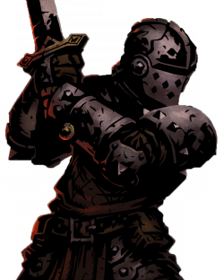

2
Crusader
Hamlet (town) Offensive

Zealous Vigil (Passive) - All stress gains / losses are halved until day 3. You will also be immune to Occupation and Redirection. You will keep this passive upon changing class.
Bulwark of Faith (Passive) - All attacks on your night target will be redirected to you. You will be immune the first time you are attacked this way.
Inspiring Cry (Day) - Target player will live for an additional night if they were to die tonight. Target also heals 25% stress. Can target yourself. (2 Uses)
Zealous Accusation (Day) - You will attack whoever you visit tonight. (Single Use)
Stunning Blow (Night) - Occupy a player. You cannot stun the same player twice in a row (Infinite Uses)
Holy Lance (Night) - Redirect all abilities to your target, bypassing immunities. You will be immune to death tonight. Heal 10 stress for each ability redirected. (Single Use)
Stress: 0/200
Stress Mechanics
When stress = 200, you will commit suicide.
Gain 10 stress whenever a town-aligned player dies
Gain 20 stress whenever a town-aligned player is lynched
Gain 30 stress whenever YOU kill a town-aligned player.
Triple all stress gains when a religious character is the one who dies.
Lose 10 stress whenever a scum-aligned player dies
Lose 20 stress whenever a scum-aligned player is lynched
Lose ALL stress whenever you kill a member of the Cult
You will lose 50% stress whenever you kill a neutral player.
When converted…
Zealot
Unseen Support
Zealous Vigil (Passive) - You will be immune to Occupation and Redirection. You will keep this passive upon changing class.
Conviction (Passive) - When you are lynched, the Mastermind will be able to convert tonight, regardless of cooldown.
Battle Heal (Day) - Heal a player tonight. If the Assassin were to be attacked when targeted by this ability, they will kill their attacker, bypassing immunities. (2 Uses)
Smite (Night) - Remove a player’s immunities for the night. This includes applied immunities such as Guards!. (2 Uses)
Crippling Strike (Night) - If the target player would have visited a member of the Unseen, you will occupy them for two nights. (2 Uses)
This class becomes the invoker when converted into the cult
Cult Alts!
You cannot take Holy Lance.
Stunning Blow can be taken for 1 cult point, and does the same thing.
1-cost alts
Dedication (Bulwark of Faith) - If a member of the cult were to be attacked, you will be attacked instead. You will have one time death immunity to attacks redirected to you.
Harrowing Howl (Inspiring Cry) - The Cult Leader will be able to attack an additional player with Eradicate. (Single Use)
Cult Vigil (Zealous Vigil) - All stress gains will be doubled.
2-cost alt
Last Sacrifice (Zealous Accusation) - You will explode, killing yourself and two players if you live until the end of the day. Cannot target the King. Cannot kill targets that would normally be death immune during the night. (1 Use)